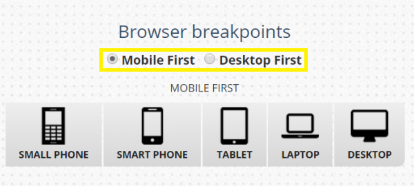

A semantic element clearly describes its meaning to both the browser and the developer.Examples of non-semantic elements: <div> and <span> - Tells nothing about its content. Examples of semantic elements: <form>, <table>,
and <article> - Clearly defines its content.
HTML5 semantic elements are supported in all modern browsers. In addition, you can "teach" older browsers how to handle "unknown elements". Read about it in HTML5 Browser Support.
Many web sites contain HTML code like: <div id="nav"> <div class="header"> <div id="footer"> to indicate navigation, header, and footer. HTML5 offers new semantic elements to define different parts of a web page:
Undoubtedly, JavaScript’s (JS) popularity among the developer community has grown enormously over the years. The reason is its ability to allow developers to design and modify web pages in numerous ways and even add functionalities to web apps real-time.
JavaScript is gathering attention not just for its simplicity and ease of use but also due to what it brings to the table—Efficiency, Security, and Low-cost results.
At the same time, advancing technologies are pushing techies to add new skills to their repository for JS. Here we have listed top 3 best JavaScript frameworks that you must keep an eye on, in 2018:
Angular
Angular.js is often referred to as an MVW (Model-View-Whatever) framework and among the top benefits, for startups and mid-sized companies, people name: quick code production, easy testing of any app part and two-way data binding (changes in the
backend are immediately reflected on the UI). Since release its ecosystem has gone beyond imagination. As for now, it is reasonably called the most used JS framework for SPAs (Single-Page Applications) development and it boasts the largest community of developers.
ReactJS
It is rightly considered the fastest growing JS framework: as of today, there are about 1,000 contributors on Github. In MVC (Model-View-Controller) pattern React.js acts as “V” and can be smoothly
integrated with any architecture. Due to the usage of virtual DOM it provides a great performance boost, comparing to Angular 1.x. In addition to that, React components can be created and re-used among applications or even transferred for public
use.
Vue js
Going deeper, Vue.js offers two-way data binding (seen in AngularJS), server-side rendering (like in Angular2 and ReactJS), Vue-cli (scaffolding tool for quick start) and optional JSX support. Its founder states that Vue 2 is one of the fastest
frameworks all in all.
Vue.js is a better choice for quick development of cross-platform solutions. It can become a firm basis for high-end single page applications (SPAs) and beneficial solution to those cases, when performance is put
ahead of good code organization or app structure.

CSS Media Queries
Posted on
CSS media queries allow you to apply different sets of CSS rules based on conditions like browser width or device type.
Most commonly, media queries are used to create a responsive design, where different CSS styling is applied to different screen sizes. This lets designers craft sites that are pleasant to use and easy to read – even on very small screens – without creating completely separate mobile websites or themes
Basic Example
Here is an example of a media query that hides the custom header image in the Twenty Fourteen theme for screen sizes smaller than 800 pixels wide:
The CSS inside the @media rule example above only works in the mobile- and tablet-sized previews. It doesn’t apply to the desktop-sized preview because the desktop browser width is larger than 800px.